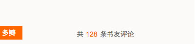

当我在浏览多看时，常常想看这本书在豆瓣的评分作为参考，也常常想去豆瓣看看别人对这本书的评论笔记，以方便我做出决策是不是要购买此书。
而完成这件事情，我需要做以下几步：
1) 复制豆瓣上得书名。
2) 浏览器输入豆瓣域名（或者点书签，但我不绝不会百度豆瓣）。
3) 点击顶部导航“读书”（是的，我知道可以直接输入book.douban.com，但是手比脑快，没办法）。
4) 粘贴复制的书名到搜索框，点击搜索按钮。
5) 选择一项搜索结果。
6) 开始看评分，看书评。
不写不知道，一写吓一跳，一本书6步，两本书12步，长年累月，得花费多少时间浪费在这重复的6步上，身为资深屌丝不安分程序员，总得做点什么以盼可以改变这个同样不安分的世界，于是就有了“多瓣”，希望可以稍微方便同样爱看书的你，以及极大的方便我自己。
点击关闭后，收缩成方块吸附在网页边缘，再次点击可以展开。

好了，介绍就这么多，如果你喜欢，那就下载吧。
还没搞定Google Chrome开发者5美元入伙费，暂时硬安装吧。
1) 解压下载的zip文件，得到app.crx。
2) 浏览器输入chrome://extensions/
3) 拖动app.crx到页面进行安装。
可以去这条微博下评论，我会及时看到。